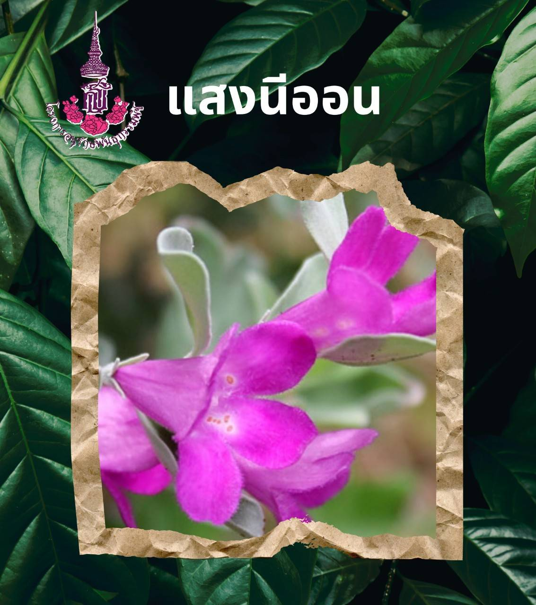

 |
ชื่อพื้นเมือง : แสงนีออน
ชื่อวิทยาศาสตร์ : Leucophyllum frutescens (Berl.) Johnson
วงศ์ : SCROPHULARIACEAE
ชื่อสามัญ purple sage, texas ranger, silverleaf, white sage
ลักษณะทางพฤกษศาสตร์ เป็นไม้พุ่ม สูง 1 - 2 เมตร
พุ่มกว้างประมาณ 1 - 2 เมตร ใบเดี่ยว ผิวสัมผัสละเอียด ใบรูปไข่กลับถึงรูปรีสีเขียวอมเทา ยาว 2 - 3 เซนติเมตร มีขนอ่อนนุ่ม
มักบิดห่อขึ้นเล็กน้อย ดอก ออกเป็นช่อตามปลายกิ่ง โคนกลีบดอกเป็นดอกสีม่วงจางปลายแยกเป็น 5 แฉก
สีม่วงสด ถึงสีชมพูอมม่วงแดง มักออกดอกพร้อมกันทั้งต้น
มีถิ่นกำเนิดในประเทศเม็กซิโก กระจายพันธุ์อยู่ทั่วไปในแถบลาตินอเมริกัน ขยายพันธุ์ด้วยวิธีปักชำ ตอนกิ่ง
ประโยชน์ : เป็นไม้ประดับ
|